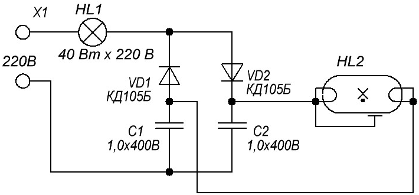
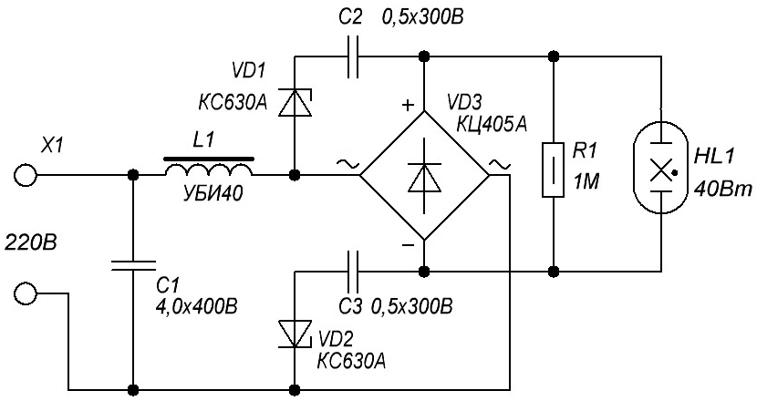
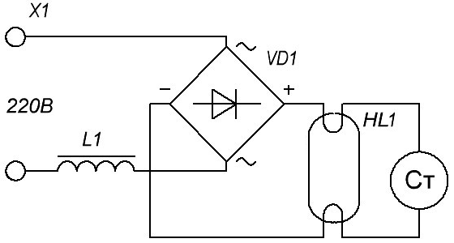
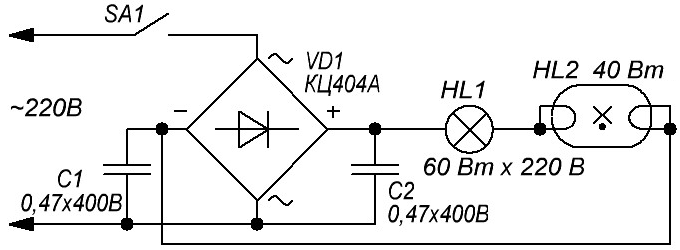

Схемы питания лампы дневного света
без дросселя и стартера
В схеме (рис. 1) роль токоограничивающего дросселя выполняет обычная лампа накаливания, мощность которой равна мощности используемой лампы дневного света (ЛДС).

Рис. 1 - Использование лампы накаливания вместо токоограничивающего дросселя
Сама ЛДС подключена к сети через выпрямитель, собранный по классической схеме удвоения напряжения (VD1, VD2, С1, С2). В момент включения, пока разряда внутри лампы дневного света нет, на нее подается удвоенное напряжение сети, которое поджигает лампу без предварительного подогрева катодов. После запуска ЛДС в работу включается токоограничивающая лампа HL1, на HL2 устанавливается рабочее напряжение и рабочий ток. В таком режиме лампа накаливания едва светится. Для надежного запуска светильника необходимо фазный вывод сети подключить как показано на схеме – к токоограничивающей лампе HL1.
Вторая схема (рис. 2) позволяет запустить лампу дневного света с перегоревшими пусковыми спиралями мощностью до 40 Вт (при использовании лампы меньшей мощности дроссель L1 необходимо заменить на соответствующий используемой лампе).

Рис. 2 - Схема для запуска ламп дневного света с перегоревшими пусковыми спиралями
Напряжение питания подается через стандартный дроссель L1 на выпрямитель VD3 (диодная сборка КЦ405) и далее на лампу HL1. Пока лампа погашена, напряжения на удвоителе VD1, VD2, С2, С3 достаточно для открывания стабилитронов, поэтому на электродах лампы присутствует удвоенное напряжение сети. Как только лампа запустится, напряжение на ней упадет и станет недостаточным для работы удвоителя. Стабилитроны закрываются и на электродах лампы устанавливается рабочее напряжение, ограниченное по току дросселем L1. Конденсатор С1 необходим для компенсации реактивной мощности, R1 снимает остаточное напряжение на схеме при ее отключении, что обеспечит безопасную замену лампы.
Следующая схема (рис. 3) подключения лампы устраняет ее мерцание с частотой сети, которое становится очень заметным при старении лампы. Как видно из рисунка ниже, кроме дросселя и стартера в схеме присутствует обычный диодный мост.

Рис. 3 - Схема подключения лампы для устранения мерцания
В схеме на рис. 4 в качестве балластного сопротивления в схеме применяется лампа накаливания (для ЛДС 80 Вт ее мощность нужно увеличить до 200-250 Вт). Конденсаторы работают в режиме умножителя и поджигают лампу без предварительного разогрева электродов. Используя питание ЛДС постоянным током, не следует забывать, что при таком включении из-за постоянного перемещения ионов ртути к катоду, происходит затемнение одного конца лампы (со стороны анода). Явление это носит название катафореза и частично бороться с ним можно регулярным (раз в 1-2 месяца) переключением полярности питания ЛДС.

Рис. 4 - Схема использование лампы накаливания в качестве балластного сопротивления